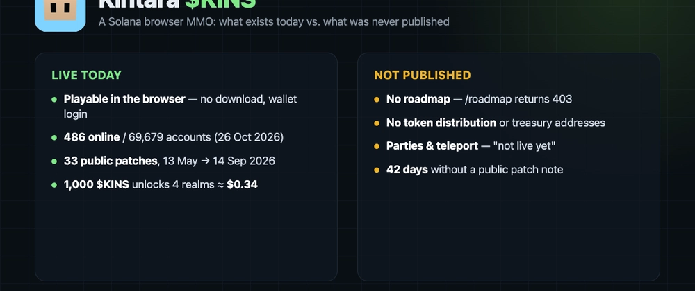

Kintara is a browser-based, isometric MMO that runs on Solana, and it has one quality that is rare in this sector: you can open it and play in the next thirty seconds. No download, no launcher, no password — you connect a Solana wallet and you are in.
That makes it a useful case study, because the interesting question about a small Solana game is never "does the token exist", it is "how much of this is actually shipped". Here is the public record as of 26 October 2026.
The audience is specific: RuneScape-shaped progression in a browser tab, with a wallet instead of a subscription. It is not trying to be a graphics showcase.
There is no public roadmap. The docs are detailed about systems and silent about dates; they say features "may be added in future updates" and state that "parties and teleport-to-friend are not live yet".
Token distribution is not published either. No allocation table, no vesting schedule, no treasury address list. Supply is verifiable on-chain — 991,692,960.717712 KINS, 6 decimals — but who holds it is not, and public RPCs refused the largest-accounts call during this research.
The patch feed also stops at 14 September, 42 days old, after 33 entries at intervals of one to ten days. The site bundle is stamped ?v=20261023-kcperks, so work continues; it just stopped being documented in the public feed.
That is the whole documented utility. Beyond it: no allocation, no emissions schedule.
Kintara is one of the projects in the Mycelium Strategy. The allocations page currently shows $KINS at 9.87% of a $32,009 live allocation ($3,160.84), in a single MYC/KINS Raydium pool (FmyAWpcEGTrV7hHdZ391kKycektEBZzoetL6GtjDkLua). DexScreener reports about $3,161 of liquidity in that pool — the two sources agree to the dollar. It is a small, verifiable link rather than a headline partnership.
The product shipped before the market did. The oldest trading pair dates from 22 May 2026, and there were already weeks of patch notes behind it. Thirty-three documented releases, a free-to-play funnel that removes the wallet as an onboarding wall, and 495 concurrent players on a quiet Monday in October is not a token with a landing page — it is a small game with a token attached. That ordering is much harder to fake than volume.
The access gate is economically almost decorative. Holding 1,000 $KINS costs roughly $0.38 at the current price of about $0.000383. A barrier that cheap cannot create persistent demand to hold, so the documented utility is closer to a membership than to a sink. Combine that with an unpublished distribution and unpublished treasury addresses, and the float and concentration cannot be assessed from public sources at all. That is not proof of a problem — it is the absence of the evidence you would want.
Read the feed for cadence, call the stats endpoint for live concurrency, pull the mint on Solana for supply and revoked authorities, and read the allocations page for the pool. Each of those is a fact. Roadmap, distribution and float are currently silence.
Discuss these findings and the Mycelium Strategy: https://discord.gg/5M7FsQcGq
AI-created for a Mycelium Finance bounty.
Sources